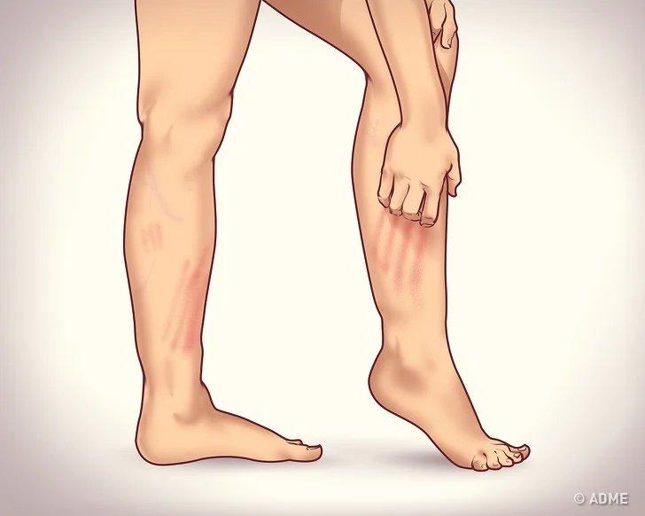
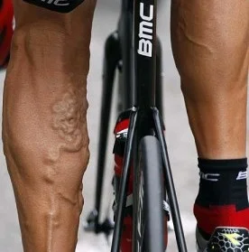

Лечение варикоза. Профилактика варикоза. Как лечить, избежать варикоз ног ??

Варикоз – искривление и расширение вен в икроножной части ног. Сопровождается потерей эластичности стенок вен; чем больше запущена болезнь, тем более выражены симптомы – вылезающие узлы характерного темно-синего цвета. Профилактика это очень хорошая вещь, и люди которые ездят честенько на велосипеде могут смело встать в число одних из самых заботливых о своем здоровье. Всем давно известно, что при езде на велосипеде идет активная тренировка ног. Ошибочно полагать, что идет накачка мышц, как в спортзале, – они становятся крепче, повышается их выносливость. Более развитые мышцы способны лучше удерживать сосуды, что предотвращает их дальнейшее расширение и деформацию. Но поговорим немного о другом: варикоз есть, и в данный момент он сам не уберется. Можно ли кататься на велосипеде с этой болезнью, и какие правила следует соблюдать, узнаем прямо сейчас.
Ответ на вопрос
Кататься на велосипеде при варикозе можно и даже нужно! Единственный момент, который может заставить отказаться от поездок, – противопоказания врача в сильно запущенных случаях. На ранних стадиях развития расширения вен на ногах непродолжительные покатушки только приветствуются. Разберем почему. Езда на велосипеде улучшает кровоток и полностью нейтрализует застойные зоны крови. Это, в свою очередь, стабилизирует эластичность сосудистых стенок. Интенсивный кровоток в ногах в сочетании с тонусом икроножных мышц полностью затормозит дальнейшее течение болезни. Итак, велосипед – универсальное средство для поддержания здоровья в целом, а в случае с варикозом он дает следующие преимущества: вены становятся более плотными, не выпирают из-под кожи; предотвращение развития тромбофлебита; можно забыть об отеках ног; динамические нагрузки на все группы мышц. Катание на велике – спокойное занятие, исключительно полезное для организма. Чего не скажешь о велосипедном спорте. К сожалению, заниматься серьезными велодисциплинами при варикозе противопоказано. Велоспорт – это повышенные нагрузки на ноги, мышцы, суставы и сосуды. Последние отвечают за подачу и отвод крови (жизнеобеспечение). И так неважные сосуды под нагрузкой могут совсем выйти из строя, что обернется нешуточными проблемами с ногами.
